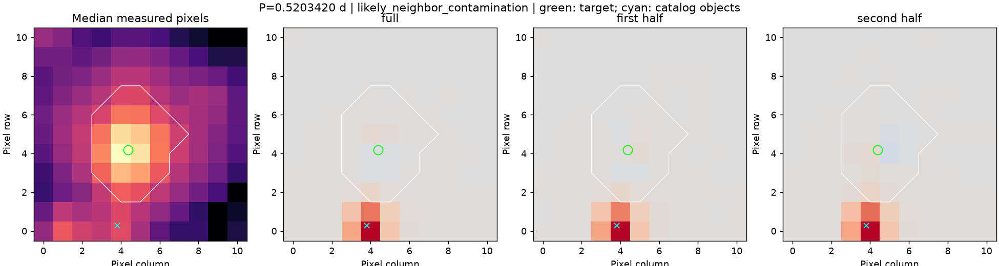

contamination-259238257
已有真实开发对照，不是新的独立测试。
v4 选定周期：None 天；周期对照：abstained。
来源去向：不将这个周期信号归属目标；来源状态：likely_neighbor_contamination。
来源图使用旧数据中保留的候选周期 0.5203420420891429 天，仅作诊断，没有提升 v4 的周期结论。
周期搜索与光变图 · 完整来源依据 · 可复现的来源输入
时段 14
SAP 辅助通道
- SAP_BKG：no_strong_correlation；相关系数 0.03167536605520156；周期改善 -0.010034678258686203。
- POS_CORR1：no_strong_correlation；相关系数 0.09485612856031167；周期改善 -0.027215089074879906。
- POS_CORR2：no_strong_correlation；相关系数 0.06563391189797348；周期改善 -0.014589660142614536。
- MOM_CENTR1：no_strong_correlation；相关系数 0.13365542028814767；周期改善 -0.02413677671961212。
- MOM_CENTR2：no_strong_correlation；相关系数 0.06316015288222326；周期改善 -0.014528927803421965。
PDCSAP 辅助通道
- SAP_BKG：no_strong_correlation；相关系数 0.010721746231721337；周期改善 -0.010034678258686203。
- POS_CORR1：no_strong_correlation；相关系数 0.037026487800823744；周期改善 -0.027215089074879906。
- POS_CORR2：no_strong_correlation；相关系数 0.011861131737214042；周期改善 -0.014589660142614536。
- MOM_CENTR1：no_strong_correlation；相关系数 0.057664954813913726；周期改善 -0.02413677671961212。
- MOM_CENTR2：no_strong_correlation；相关系数 0.012472276875817461；周期改善 -0.014528927803421965。
时段 40
SAP 辅助通道
- SAP_BKG：no_strong_correlation；相关系数 0.8027325141027369；周期改善 -0.010682188641670365。
- POS_CORR1：no_strong_correlation；相关系数 0.41883576790387267；周期改善 -0.012585569113626516。
- POS_CORR2：no_strong_correlation；相关系数 -0.27119354084841707；周期改善 -0.02050984715319193。
- MOM_CENTR1：no_strong_correlation；相关系数 0.26812971357782756；周期改善 -0.014260590142380014。
- MOM_CENTR2：no_strong_correlation；相关系数 -0.24034358696207375；周期改善 -0.020930897657897685。
PDCSAP 辅助通道
- SAP_BKG：no_strong_correlation；相关系数 0.1919413143593416；周期改善 -0.010682188641670365。
- POS_CORR1：no_strong_correlation；相关系数 -0.009609827601779449；周期改善 -0.012585569113626516。
- POS_CORR2：no_strong_correlation；相关系数 0.0261011366274779；周期改善 -0.02050984715319193。
- MOM_CENTR1：no_strong_correlation；相关系数 -0.048274125966939925；周期改善 -0.014260590142380014。
- MOM_CENTR2：no_strong_correlation；相关系数 0.03809410855329663；周期改善 -0.020930897657897685。
时段 85
SAP 辅助通道
- SAP_BKG：no_strong_correlation；相关系数 0.09837031952853306；周期改善 -0.016112231776215236。
- POS_CORR1：no_strong_correlation；相关系数 0.15554134994772587；周期改善 -0.010003684658538514。
- POS_CORR2：no_strong_correlation；相关系数 0.16061513448308912；周期改善 -0.007721878269531635。
- MOM_CENTR1：no_strong_correlation；相关系数 0.15596185833061857；周期改善 -0.009344949385290624。
- MOM_CENTR2：no_strong_correlation；相关系数 0.12365284758668667；周期改善 -0.007583619615377346。
PDCSAP 辅助通道
- SAP_BKG：no_strong_correlation；相关系数 -0.2261773548896008；周期改善 -0.016112231776215236。
- POS_CORR1：no_strong_correlation；相关系数 -0.014340578348606078；周期改善 -0.010003684658538514。
- POS_CORR2：no_strong_correlation；相关系数 -0.07124921694354358；周期改善 -0.007721878269531635。
- MOM_CENTR1：no_strong_correlation；相关系数 -0.015496561223621308；周期改善 -0.009344949385290624。
- MOM_CENTR2：no_strong_correlation；相关系数 -0.07472271660351225；周期改善 -0.007583619615377346。
像素结论：likely_neighbor_contamination。

绿色圈是目标位置；青色叉是输入目录对象；白线是原测光区域。颜色表示与光变同相的周期变化，位置判断不是精密光斑拟合。